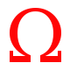

Origin of the Symbols
Every category on showcaves.com is represented by a simple symbol or logo. Those logos are mostly derived from symbols used in topographic maps. Such symbols differ widely from counry to country and even from map to map, but we used symbols as they are common in German maps. Their meaning is to show the visitor which category a certain site has.
- 
Show Caves
The symbol for caves is the Greek letter Omega, which is often used as a symbol for caves on maps, mainly because it looks like the portal of a cave. The red colour means show cave.
-
Other Caves
The symbol for caves is the Greek letter Omega, which is often used as a symbol for caves on maps, mainly because it looks like the portal of a cave. The black colour means wild or semi-wild cave.

Karst Springs
The symbol for springs is normally a blue circle, sometimes filled. A blue line coming out out the bottom right corner symbolizes the outflow of the spring, and as a brook it is not straight but serpentine. Sometimes the capital letter Q is used, which is in German the first letter of the word for spring (Quelle).

Karst Features
A circle with centric lines is often used as a symbol for small depressions on maps. In karst areas such depression are generally sinkholes or dolines, which are the most common and easy to see karst features.

Gorge
The gorges we list here are narrow clefts in the rock, a river cutting deep and fast into the rock. The symbol is a black square symbolizing the rock with a white crack in it.

Show Mines
The symbol we used, two crossed hammer-like tools, were the typical tools of miners in the middle ages, one used as a hammer, the other as a chisel, to break the rocks. It is often used as a symbol for mining and especially for mines on maps.

Subterranea
The symbol for a tunnel is a simple U, filled and upside down. As this is the only widely known subterranea which is shown in maps we chose to use it for subterranea.

 Index
Index Topics
Topics Hierarchical
Hierarchical Countries
Countries Maps
Maps Search
Search